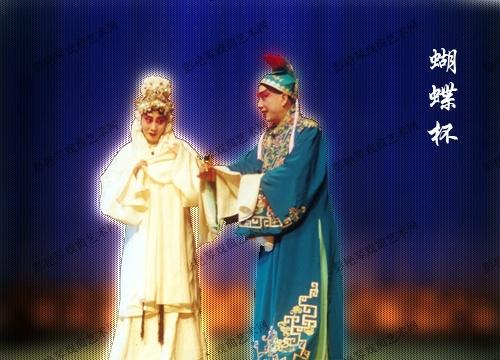
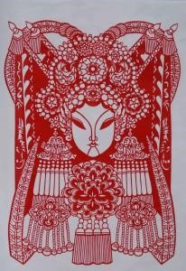
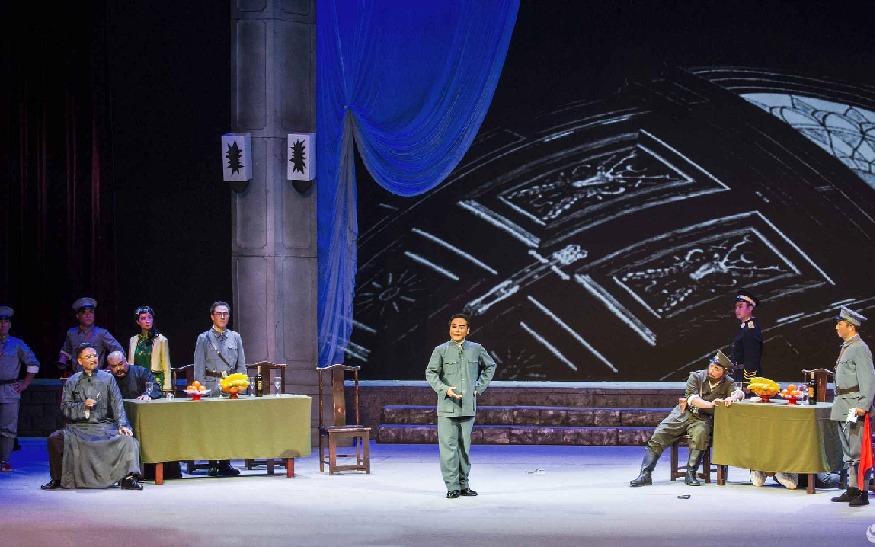

2020年第四届“华夏文化，有冀可寻”河北地域特色文化线上展览|民俗文化篇（一）
一方水土养一方人，一片土地也有一片土地的民俗文化，在这片广袤的河北大地上又会有着怎样的民俗呢，让我们一起走进“华夏文化，有冀可寻”线上云展，从戏曲、春节、手工艺三个方面来共同欣赏河北的别样民俗吧！
一、戏曲
（一）河北梆子
1. 介绍
河北梆子是中国梆子声腔的一个重要支脉，形成于清道光年间（1821—1850），清光绪初年进入兴盛时期。河北梆子在剧种方面不仅擅长于表现历史题材，而且能很好地反映现实生活；在舞台艺术上，无论是音乐、表演以及舞台美术方面，都有极大的变化和明显的提高，从而使河北梆子增添了明朗、刚劲、华丽、委婉的特点，流行于河北、天津、北京以及山东、河南、山西部分地区，成为中国北方影响较大的传统戏曲剧种之一。河北梆子在其兴盛期，还曾传入中国东北三省、江淮地区以及俄罗斯和蒙古人民共和国境内。
2. 艺术特点
河北梆子唱腔分有生、旦、丑三行。
生：基本都用老生唱腔，但不唱大慢板
旦：用青衣唱腔，亦很少唱大慢板
净：有一套自成体系的基本板式，有小慢板、二六、尖板、流水四种，但不甚完备
丑：有一套自成体系的唱腔，除无大慢板外，其他板式俱全
3. 代表人物
代表人物（一）--彭蕙蘅
1966年出生于河北隆尧，中专学历，一级演员。1984年毕业于河北省艺术学校，师从河北梆子名家贾桂兰、刘香玉。分配到河北省梆子剧院，先后任演员、主演、领衔主演、青年团团长、名誉团长。
代表人物（二）--银达子
原名王庆林，天津南郊人。1895-1959河北梆子老生演员。师承小元元红（魏连升）一派。嗓音柔润甘甜，有如银铃清新悦耳。
代表人物（三）--赵鸣岐
1908年出生于清苑温仁村。师从马吉唐、张凤仪，攻文武老生。功底深厚，艺名“十四红”。文武兼备，唱做具能，嗓音高亮。
代表人物（四）--王柏华

1933年出生于河北文安，河北梆子著名老生演员。幼年入家乡“子弟班”学唱京剧老生，后入沧州市京剧团，演文武老生。1956年加入天津市河北梆子剧团，拜银达子为师，改学河北梆子老生。在继承银达子唱腔风格的基础上，借鉴京剧老生的演唱技巧，吐字归韵很为讲究；吸收京剧花脸的唱法，合理地运用炸音。
4. 著名曲目
(1) 《宝莲灯》
《宝莲灯》创作于20世纪50年代末，讲述神话传说沉香劈山救母的故事，剧情跌宕起伏、扣人心弦，裴艳玲、齐花坦、田春鸟、周春山等一大批知名戏曲艺术家都曾演出该剧。
(2) 《蝴蝶杯》
《蝴蝶杯》是一部广受欢迎的老戏，情节较曲折，《蝴蝶杯》源自《蝴蝶杯宝卷》与《说唱蝴蝶杯》鼓词等。1957年被长春电影制片厂摄制为舞台艺术片，1965年香港邵氏电影公司亦将其拍成电影《蝴蝶杯》。讲述江夏县令之子田玉川为渔家女胡凤莲之父抱不平，误杀总督卢林(井淼)之子惹祸。玉川逃至江边，走投无路，幸遇凤莲搭救，二人相对终宵，情愫渐生，玉川以传家之宝蝴蝶杯相赠，订下终身之约。
(3) 《梁祝》唱词
我为你每日里愁眉不解（祝英台）
我为你每日里愁眉不解
我为你每日里懒上妆台
我为你气坏了二老年迈
我为你对孤灯如痴如呆
命危殆
一夜哭到东方白
哎
红日
（选自绝对有戏）
（二）评剧
1.评剧介绍
评剧，流传于中国北方，汉族传统戏曲剧种之一，是广大人民所喜闻乐见的剧种之一，位列中国五大戏曲剧种。曾有观点认为是中国第二大剧种。清末在河北滦县一带的小曲“对口莲花落”基础上形成，先是在河北农村流行，后进入唐山，称“唐山落子”。评剧有东路、西路之分，而以东路评剧为主。
2.评剧发展的五个阶段
（1）对口莲花落阶段
一人打击架上所有的锣、鼓、镲等，表演者同时扮演几个角色，且说且唱，亦歌亦舞，有时有一人或几个帮腔。
（2）“拆出”阶段
对口莲花落因受东北二人转影响，特别是接受了它的“拉场戏”这一表演形式， 将“对口”的唱、白拆开,将故事分成场次，并改原来第三人称的叙述为第一人称的表演,称为“拆出”。
（3）唐山落子(即平腔梆子戏)阶段
乐队去掉竹板，改用鼓(底鼓)和梆子按拍，增加了板胡和笛子，并采用河北梆子锣鼓经。同时吸收皮影、乐亭大鼓、京剧等的唱腔、过门和身段，从而提高了艺术表现力。此时的平腔戏演唱因用真声，高弦低唱，故而得名“平戏”，至此评剧作为一个剧种已基本形成。
（4） 奉天落子阶段
奉天落子时期，主要的评剧班社大多在东北活动，唱腔激越高昂，热情奔放，素有"大口落子”之称。 特别是女演员的出现，标志着评剧发展进入了一个新的阶段。奉天落子是一-种辽宁的传统戏曲。发生在上个世纪20年代初到40年代末的以沈阳(奉天)为中心的东北地区，主要源于唐山落子，唐山落子出关与东北民众习俗和欣赏需要相融合，形成以奉天为中心、特色鲜明、遍布东北、分布全国的落子，奉天是东北的政治、经济、文化中心，人们称这时期的落子为“奉天落子”。
（5）评剧阶段
1935年起，落子艺人大量涌向南方，到上海、杭州、南京等地演出，以后又到重庆、成都、贵阳等地，并在这些地区扎下根。此年年初，上海报纸纸目广告出现“评剧”名称。
3.艺术特点
① 以唱工见长，吐字清楚，唱词浅显易懂，演唱明白如诉，表演生活气息浓厚，有亲切的民间味道。它的形式活泼、自由，最善于表现当代人民生活，因此城市和乡村都有大量观众。
② 评剧唱腔是板腔体，有慢板，二六板，垛板和散板等多种板式。解放后，评剧音乐，唱腔，表演的革新取得显着成就，特别是改变了男角唱腔过于贫乏的弊病，男声唱腔有了新的创造。其表演艺术虽吸收了梆子、京剧的身段、程式，一度出现京剧化的倾向，但仍保持着民间活泼、自由、生活气息浓郁的特点。
③ 善于表观现实生活是评剧的一个传统。辛亥革命后，成兆才依据当地的时事新闻创作和改编了《杨三姐告状》《 黑猫告状》《枪毙骆龙》《枪毙骆虎》等，基本上奠定了评剧以演现代剧目为主的特长。中华人民共和国建立后，评剧进入了新的繁荣发展时期，演出了一-批受群众欢迎的现代戏，如小白玉霜和韩少云主演的《小女婿》、新凤霞主演的《刘巧儿》《祥林嫂》、《小二 黑结婚》以及《金沙江畔》、《夺印》《野火春风斗古城》，改革开放以后又出现《山里人家》《疙瘩屯》《黑头与四大名旦》《 贫嘴张大民的幸福生活》等优秀现代剧目。
4.评剧代表人物及代表作品
（1）奠基人物
奠基人：成兆才（1874—1929），字捷三（又作浩三），评剧鼻祖，清直隶滦州绳各庄（今属河北省滦南县人）。清同治十三年（1874）十二月二十日出生于一个贫苦的农民家庭。他一生所整理、改编、创作的剧本多达一百零二个，为创建评剧事业奠定了基础，被称为评剧剧本作者第一人。
（2）早期流派创始人
李金顺（1902—1953），评剧女演员，工旦行，“李派”创始人。她是第一代评剧演员，是评剧进入“奉天落子”时期的最主要的代表人物。
白玉霜（1907—1942），评剧女演员，工旦行，“白派”创始人，评剧早期四大名旦之一。
刘翠霞（1911—1941），评剧女演员，工旦行，“刘派”创始人，评剧早期四大名旦之一。
（3）旦角流派创始人
小白玉霜评剧新白派创始人，20世纪50、60年代评剧届的领头羊。原名李再雯，山东人，5岁随父逃荒到北京，被白玉霜收为养女。经李文祉启蒙，继承了白玉霜的演唱风格。14岁登台演戏，在京津一带享有盛名。她的代表剧目有《玉堂春》《临江驿》《打狗劝夫》《劝爱宝》《珍珠衫》《红娘》等。
新凤霞（1927—1998），评剧新派创始人。原名杨淑敏，天津市人
新凤霞主演了《志愿军的未婚妻》、《会计姑娘》、《春香传》、《乾坤带》、《金沙江畔》、《无双传》、《杨乃武与小白菜》、《凤还巢》、《三看御妹》、《花为媒》、《杨三姐告状》、《阮文追》、《调风月》、《六十年的变迁》等几十出剧目。
（4）生角流派创始人
魏荣元（1923—1976），评剧花脸、老生，魏派创始人。
擅演剧目有《钟离剑》、《孙庞斗智》、《夺印》《包公三勘蝴蝶梦》《包公赔情》等。主演的《秦香莲》已拍成影片。
5.评剧的传承：评剧艺术节
评剧是中国历史悠久、群众基础广泛的传统剧种之一。中国评剧艺术节创办于2000年，是由国家文化部艺术司、河北省文化厅和唐山市人民政府联合主办的，一年一度的国家级大型戏剧艺术节。从第四届开始变成每两年举办一届，主办地设在评剧的发源地河北省唐山市。
中国评剧艺术节以继承、发展、弘扬评剧艺术，不断扩大评剧艺术在国内外的影响力为宗旨。艺术节的内容包括优秀剧目的评选和演出，召开评剧艺术研讨会，组织评剧爱好者演艺比赛和评剧电影展映周等活动。艺术节在举办过程中十分注重时代性和群众的参与性，同时自第三届以来不断加强与经济活动的结合，为弘扬民族文化，促进艺术交流,推动评剧艺术的发展做出了贡献。

（选自评剧传扬小分队 ）
视频（选自皮皮虾队）
2020年第四届“华夏文化，有冀可寻”河北地域特色文化线上展览|民俗文化篇（二）
二、节日习俗--春节
春节习俗是中国人在春节期间的习惯风俗，中国各地因地域文化不同而又存在着习俗内容或细节上的差异，带有浓郁的各地域特色。

常见的春节习俗有拜年、贴春联、挂年画、贴窗花、放爆竹、发红包、穿新衣、吃饺子、守岁、舞狮舞龙、挂灯笼等，在春节期间，每一天都有不同的习俗。
有道是“三里不同风，十里不同俗”，在此，我将用简单的话语向大家介绍河北各地的春节习俗，希望能带领大家更加全面深刻的了解河北各地春节习俗。
（一）石家庄春节民俗
①无极剪纸
无极剪纸始于古代，盛行于明末清初。每逢节日、婚礼，人们都用剪纸制作灯花、挂彩纸、剪年福(符)、贴窗花的形式，来表达对生活的热爱和感受。无极剪纸造型丰富、题材广泛、生活气息浓郁，其风格受山西和天津杨柳青年画影响，逐步形成独具一格的剪纸艺术。
②正定常山战鼓
正定常山战鼓历史悠久，早在战国时期已具雏形，至明代已盛行于民间，正定是历史上“常山郡”所在地，故称其为“常山战鼓”。常山战鼓是由鼓、大钹、中钹、小钹、小锣等打击乐器组合而成的一种民间清锣鼓，主要用于广场表演。
常山战鼓，铿锵有力，助威壮胆，催人奋进，产生一种心齐志坚、所向披靡的豪迈感。所以在春节、庙会等重大节日、活动中都要请其助阵，以壮声威。
③晋州官伞
官伞发源并流传于晋州境内的故城、槐树、东宿和城关一带的汉族民俗舞蹈，以舞者持伞表演而得名。官伞本是古代统治者为炫耀权威、地位而设的仪仗之一，随着时代的演进，习俗的变化，伞的作用逐渐消退，冲破社会等级而流传民间，成为汉族民间舞蹈艺术，营造喜庆、热烈和祥和的新年节日氛围。
④藁城宫灯
藁城宫灯为藁城特产，始于东汉、盛于隋唐，相传东汉光武帝刘秀定都，为了庆贺统一天下之功业，在宫廷里张灯结彩大摆宴席，所挂宫灯盏盏精致，宫灯之名由此而生，后来宫灯的制作技术传入民间。据传，明代藁城屯头村李师傅手工制作的纱灯，以美观明亮、耐风耐用为特色，遐迩闻名，生意愈发兴隆，其艺传世而不绝。如今，藁城宫灯作为河北省非物质文化遗产保护项目，近几年可谓家喻户晓。其外形精巧、结构简单，色彩艳丽，寓意吉祥，已成为新春佳节装点家居、馈赠好友的最佳饰品。
（二）邢台春节习俗--初五爆竹破五不串门
自古以来五日是恶日，正月初五被称为“破五”。这天也是恨穷日，要大放鞭炮而不串门，防止给别人家带去穷气。有的地方，这一天要做些轻微的劳动，希望通过这天象征性的劳动发财发家。“破五”之后，一些人就开始准备元宵节的节目，城市一些店铺就要开门营业。
（三）承德春节习俗--春节从腊八开始
“二十三糖瓜黏，二十四扫房日，二十五磨豆腐，二十六宰年猪肉，二十七杀年鸡，二十八把面发，二十九满街走，三十晚上，除夕守岁，玩一宿。”这句在承德流传很久的谚语将年根儿底下人们的生活演绎得紧张而有序。
承德过年还讲究贴春条(也叫炕条)，长长的春条上至房梁下至炕沿，上面写上宜入新春乐，财神家中坐，金子堆成堆，元宝垛一垛，人财两旺好，老少齐安乐，大吉大利。
赶年集，购置各种春节食品、杂货、香烛、鞭炮，还有给孩子买的新衣服，这都是大家必不可少的事，每到这时，集市上就人流如潮，热闹非凡。
承德又称寺庙之城，因此庙会与民间节日相互辉映，也就成了承德民俗风情中的一大亮点。正月十五，元宵节。这天各式的灯笼就成了主角，到处悬灯结彩，火树银花。在双峰寺附近的老年沟，人们会用面做成碗状，晾干后插上棉花，倒点油，到晚上7时多，就开始“撒路灯”的活动，祈求一年出行平安。到了正月二十五，这天家家户户于天亮之前在院内用火灰画几个囤形，中间撒上小米，以象征仓满囤流，来年生活富足。从这天以后，年味就会悄然淡下来。
（四）张家口：最具北方原味的年风
在张家口，一进腊月就是年。各家先是开始清扫房屋，拆洗被褥，接着，男男女女赶紧剃头理发，因为在这里有正月不能理发的禁忌。接下来，就是做豆腐、压粉条，动干锅炸麻花，蒸年糕、蒸馒头，许多人家要在腊月里置办上半个正月的饭。而一到正月，尤其是初一到初十，各家各户不能吃赖饭，即不好的饭，天天吃腊月里置办的年饭，预示着来年天天有好饭吃。

等年饭置办得差不多了，又是该办大年的时候了，办大年就是买年货，花生、瓜子、红枣、核桃、糖果、点心，有钱的人家再买些鸡鸭鱼肉，还有过年的花炮，这就是办大年了。进入腊月二十七八就开始贴对联了。把红对联贴满整个院落，鸡窝上、猪棚旁、甚至农用拖拉机上也要贴个一路平安，图个喜庆、红火。到大年三十儿下午，吃年夜饭之前，要放个二踢脚炮，农家把一些贡品摆在院落一个干净的地方，请神主先享用年夜饭。到了晚上，要把家里人初一要穿的新衣服全部从柜子里拿出来，把要准备的年货也统统拿出来，因为，三十儿这天晚上是不能开箱开柜子的，也不能揭瓮揭缸，老人们说，这样做是免得放走了金马驹。
在旧时的蔚县，一进入腊月，逢每月农历的三六九，蔚州县城、代王城、西合营等八大集镇便开始热闹起来，而这个时候，集镇上唱主角的便非窗花莫数了。
（五）衡水：敬神焚香贴神像
在衡水的民俗中，有些也越来越浓，到了腊月二十三，年节的序幕就揭开了，这一天要过小年，家家户户要在晚间送灶---把贴了一年的灶王神式蚁吕瓷盏簦然后再请一张新的灶王神使除夕接灶王时贴用。
按照衡水民间旧俗，腊月二十四要扫房子，寓意扫去一年的尘秽，干干净净迎接新年的到来。家家户户把里里外外打扫一番，把习以为常的家居摆设换换位置，动动地方。室内合适的位置上贴上五颜六色的年画，大门上贴门神神像、春联，影壁墙上贴上福字。
（六）邯郸：春节扔愁帽
邯郸在除夕欢庆活动中流传着一种奇异的风俗扔愁帽。扔愁帽都在除夕夜深人静之时进行。各家各户临睡前，都把头上戴过的旧帽子或旧头巾，悄悄扔到大街上。第二天，打扫街道时，再把它们清扫到墙旮旯里，到下月十五夜晚烤怕灵火时烧掉。据说可以扔掉一年的旧愁，迎来一年的新喜。
① 年兽
年兽又称年。是古代汉族神话传说中的恶兽。相传古时候每到年末的午夜，年兽就会进攻村子。为了防止年兽的再次骚扰，放爆竹、贴春联渐渐成为节日习俗，春节由此成为中华民族的象征之一，潜移默化地沿袭至今以及影响世界各地。
②团年
团年就是全家团聚过年的意思，离乡游子，非迫不得已，都要在除夕前赶回家来。团年大多在年三十晚进行，也有择日提前的，团年当日，先祭拜天地、神灵、祖宗，把灶君接回来，然后全家团桌而坐，欢叙天伦，共进晚餐，这就叫做团年。
③十二生肖
十二生肖十二生肖，又叫十二属相，是中国与十二地支相配以人出生年份的十二种动物，即子鼠、丑牛、寅虎、卯兔、辰龙、巳蛇、午马、未羊、申猴、酉鸡、戌狗、亥猪，随着历史的发展逐渐融合到相生相克的民间信仰观念，并以此形成一种观念阐释系统，成为民间文化中的形象哲学，现代，更多人把生肖作为春节的吉祥物，成为娱乐文化活动的象征。
④压岁钱
压岁钱，汉族年俗，寓意辟邪驱鬼，保佑平安。压岁钱最初的用意是驱邪。因为人们认为小孩容易受鬼祟的侵害，所以用压岁钱压祟驱邪，帮助小孩平安过年，祝愿小孩在新的一年健康吉利、平平安安。
⑤春联
春联，又叫春贴、门对，它以对仗工整、简洁精巧的文字描绘美好形象，抒发美好愿望，是汉族特有的文学形式。对联的上下联字数不限，但必须相等。春联起源于桃符，是华人过春节的重要标志。
闹元宵闹元宵是古老的汉族节日民俗活动。起源于汉代。正月是农历的元月，古人称夜为宵，所以称正月十五为元宵节。正月十五日是一年中第一个月圆之夜，也是一元复始，大地回春的夜晚，人们对此加以庆祝，也是庆贺新春的延续。元宵节又称为“上元节”
（选自光宗耀组）
放视频（选自春夏秋冬）
2020年第四届“华夏文化，有冀可寻”河北地域特色文化线上展览|民俗文化篇（三）
三、手工艺
（一）河北省承德市民俗文化
承德是河北省省辖市，处于华北和东北两个地区的过渡地带，西南与南分别挨着北京与天津，背靠蒙辽，省内与秦皇岛、唐山两个沿海城市以及张家口市相邻，是国家甲类开放城市。
承德是首批国家历史文化名城，民国和解放初期为原热河省省会。位于承德市的避暑山庄及其周围寺庙是中国十大风景名胜、旅游胜地四十佳、国家重点风景名胜区，1994年被联合国教科文组织批准为世界文化遗产，同时避暑山庄及其周围寺庙也是国家首批世界文化遗产。
承德还是中国普通话标准音采集地，中国摄影之乡、中国剪纸之乡。2012年被评为中国“十大特色休闲城市”。
承德是首批国家历史文化名城、世界文化遗产地，历史悠久、底蕴深厚，有着丰富的多民族历史文化内涵和特定的地域文化，传统家庭文化和民族艺术的遗产遍布承德各县区。
可真要有人问起，承德的民间传统手工艺有多少门类？发展传承的如何？还真会把咱们大多数人给问住。想把这个问题弄清楚吗？机会来啦！
现已列入第四批国家级非物质文化遗产名录的“中华百艳，华夏一绝” ——丰宁滕氏布糊画
（1）承德布糊画
地域： 中国河北省承德市丰宁满族自治县
所属类别 :艺术品
承德布糊画与民间的布贴画、麦秆画、桦皮画、金属画、贝雕画、羽毛画等不同，它避类似工艺之短，集绘画、雕塑、刺绣、裱糊、剪纸等众家之长，以其堆积法独成一家。其作品设计严谨，用料考究，色彩绚丽，制作精细，画面逼真;题材广泛，无论人物风景、珍禽瑞兽、花鸟虫鱼，均可入画;凹凸结合，格调多变，既有浮雕立体之效果，又不失布糊画之特色;既有工笔重彩之观感，又有传统工艺之风格，可摆放、可悬挂，大者210平方米，小者只有0.05平方米，融阳春白雪与下里巴人为一体，上可入大雅之堂，下可进寻常百姓之家，是与时相进的工艺美术品、室内装饰画。在其品类上，还形成三大种类、六大系列。三大种类是:与绘画艺术相结合的布糊画，靠布糊的自然纹理制作而成的布糊画，以色调为主的大型布糊画。就达系列是:古建筑装饰系列、壁画系列、人物系列、传统吉祥画系列、花会系列、神佛系列。
（2）承德木雕
承德木雕是用承德独有的名贵特产为原料，在继承中国传统木雕艺术的基础上大胆创新，雕刻出多种既实用，又具有山城特色的汉族传统雕刻艺术珍品。承德木雕图案多取材于 大自然中的花鸟、人物、山水，形象生动，刻工精细，微妙逼真。因使用的木材质地很像象牙，承德木雕堪与象牙雕媲美，甚至能达到乱真的程度。
在承德市区的山野、路边、宅旁，生长着一种“昼开夜合”树。因为这种树的叶子白天舒展开，夜间闭合上，所以叫这个名字。承德雕刻艺人用这种名贵的木材制成的浮雕和圆雕艺术品，不仅有很久的历史，而且在全国是独一无二的。“昼开夜合”木料色泽洁白，淡雅细腻，柔韧富有弹性，非常适宜精雕细刻，一向有假象牙之称。这种艺术木雕善于表现人物、花鸟，所以多以人物、花鸟、山水为雕刻的对象。
艺人们以热河泉、六合塔、水心榭、烟雨楼、金山亭等承德风光雕制的四扁屏，深受中外客人的赞誉。大型挂屏《重阳雅集》、《画眉登枝》，是参照承德市避暑山庄皇家博物馆珍藏的牙雕、鸡翅木雕仿制的，典雅庄重，古色古香。圆雕多以花卉、动物为题材，如玉兰、海棠、荷莲、云雁、松鼠等。木雕艺人设计雕刻的《葫芦蝈蝈》，刻工极为精细。蝈蝈的触须细如发丝，长约5厘米，与象牙雕没有差别，可以达到以假乱真的程度。
承德剪纸风格细腻独特，取材十分广泛，内容除传统的花鸟、年年有“鱼”、胖娃娃以外，又增加了避暑山庄、外八庙等当地着名景致，以及以中国古典名着等为主题的剪纸内容，并恰到好处地运用了象征、夸张等艺术手法，乡土气息很浓。
（3）剪纸

丰宁剪纸分刻、剪两种，用以室内装饰和欣赏珍藏。其窗花由于象征喜庆，用于春节装饰，倍受群众喜爱。其艺术特色是以阳刻为主，阴刻为辅。构图以线为主、面为辅，富于变化，玲珑剔透，曲线流畅。内容多以花鸟虫鱼、民间传说、戏剧人物为主，既可点染，也可单色，塞外的乡土气息很浓。造型稚朴，雅俗共赏。有的还借助夸张、变形等手法使创意更为新颖。
近年来在传统手法上进行改革更新，造型趋向立体直观，格调追求豪放形象，把丰宁剪纸的艺术推向一个新的层次，销量每年近千万件。凤山、大阁两镇已发展专业作坊数百处，经营窗花的艺人多达千余名。近年来丰宁剪纸以其特有的魅力享誉海内外，1984年丰宁两位民间剪纸艺人应邀赴美国“迪斯尼乐园”表演，一鸣惊人。此后丰宁剪纸每年都有大量作品销海外，年创汇数百万元。
（二）河北省邢台市民俗文化
邢台市，简称“邢”，旧称邢州、顺德，位于京津冀区域冀中南地区中心，西依太行山与山西毗邻，东沿卫运河与山东相望，北连石家庄、衡水，南接邯郸，是中原经济区的北方门户。有3500年建城史，曾是商代祖乙之都，历史上四次建国、三次定都，素有“邢国故地、襄国故都”之誉，是中国北方最早形成城市的地区，在五万至十万年以前就有人类栖息繁衍，是仰韶文化发源地之一， 在悠久的历史中，涌现出中医圣祖扁鹊、五代明君柴荣、唐朝名相魏征、宋璟，元代科学家郭守敬等众多历史名人。
半城繁华半城江，水与争锋看邢台
民间手工艺制作在我国有着悠久的历史，是中华民族文化艺术的瑰宝，她以其悠久的历史、精湛的技艺、丰富的门类、传世的佳作蜚声海内外。几千年来，传统手工艺产品始终是代表着中华民族的一大特色产业。
邢台，有着近3500年的建城史和600多年的都城史，历史文化底蕴丰厚，民间传统手工艺产业更是基础深，潜力大，一直是就业增收的重要渠道。
近年来，以工笔画、手织汉锦、邢白瓷三大产品为代表的邢台传统文化手工艺产业异军突起，成为邢襄大地传统手工艺产品走向市场的主力军。
而星罗棋布的柳编、布线艺、宫灯制作、木刻年画、文化石、核桃工艺等从业摊点近700家，吸纳就业人员2万多人，实现产值6亿元。
随着人们多元化、差异化、个性化消费需求的不断增长，文化手工艺产业因其就地取材、就地加工、量才为用以及能耗低、污染小、附加值高、收益多的特点，体现了生态、文化可持续发展的理念，具有良好的市场前景和广阔的发展空间。
（1）邢台手工织锦
邢台手工织锦历史悠久。自汉代开始，巨鹿的织锦业就在华夏大地名声鹊起，并一直延续到今天。
据《西京杂记》记载，汉昭帝末年，巨鹿郡陈宝光的妻子“善织绫”，她革新成功的提花织机，大大提高了织绸质量，60天可以织成一匹花绫，而且“精美异常”、“匹值万钱”。
目前，邢台手工织锦企业有1000多家，其中规模企业有8家，有国家注册商标七夕乞巧、巧媳妇、老纺车、八亩扇等10个，形成了产供销一体化模式。
邢台东部平原是我国重要的棉花产地。手工织锦依托丰富的棉花资源，在巨鹿、沙河、威县、广宗、平乡、临城等地都形成了规模企业，他们采用“公司加农户”的生产模式，使手工织锦产业不断壮大。仅沙河玉龙公司一家就带动了周边五个乡镇办事处的3600户农户织布。
手工织锦在解决广大农村留守妇女就业上，作用尤为明显，几万名农村妇女依仗她们从小学过的手织布技艺，足不出户就解决了创业致富问题。临城县绿峰家纺有限公司带动了郝庄镇李子峪村90%的妇女织布，每个妇女年收入达9000元。目前，邢台手工织锦从业人员1.5万余人，年产值达1.4亿元。清脆昂扬的织机声，回荡在邢襄大地的村村落落。
（2）邢窑
邢窑是中国白瓷的发祥地，也是中国古代最早的官窑之一。它始于南北朝,盛于隋唐，素有“南青北白”的美誉。
邢台白瓷，胎质坚韧纯净、釉色温润洁白、造形丰盈浑厚，对后代彩绘瓷器影响深远，在我国制瓷历史上有着划时代的意义。唐代李肇在《国史补》中说：天下无贵贱通用之。”唐代茶圣陆羽在《茶经》中有“邢瓷类银、类雪”的评价。
博大雄浑的太行山，为邢白瓷的发展提供了优质的瓷土。目前，邢台白瓷制作企业已发展到3家，年产值达2000多万元。“明如镜、薄如纸、声如磬、白如雪”的邢台白瓷重现于世，这一断绝了近千年的古老工艺，正在焕发出勃勃生机。
（3）工笔画
一群农民靠工笔画绘一片出新天地，是一个奇迹；一群农民把工笔画开拓成一个新兴产业，更是一个奇迹。
宁晋地处九河下梢，众多河流汇聚于此，浪花里不仅带来了远方的黄河文明，而且清波下沉淀着厚重的燕赵文化。
宁晋工笔画最早起源于上世纪八十年代，到上世纪九十年代出现了上千人的工笔画队伍。
宁晋县每年创作工笔画作品10万件，主要销往北京、天津、山东、广东、江苏、新疆等省市，还远销至日本、韩国、新加坡等东南亚国家。在北京、天津工笔画市场，宁晋工笔画被称为“河北派”，占据着市场的绝大部分份额，在北京琉璃厂和潘家园两大市场，来自宁晋的工笔画作品占销售总量的80%以上。
宁晋县工笔画采用公司加工作室的方式进行生产，带动了河渠镇、凤凰镇、换马店镇等五个乡镇的50多个村的100多个工笔画作者5人以上的画室。并以宁晋为中心幅射到临城、柏乡、新河、南宫、隆尧、平乡、威县等周边（市）。
截至2010年底，邢台工笔画从业人员已达6000余人，人均年收入三万元，年创作工笔画作品10万余件，年产值达1.6亿元；
（三）河北省沧州市民俗文化
沧州市是一座有1400多年历史的古城，因铁狮子象征着它的古老文明，又称“狮城”。
（1）沧州武术
沧州武林，根深叶茂；沧州武杰，名扬八方；沧州武术，遍及华夏，远涉亚、欧、美、非一些国家和地区。沧州“武术之乡”之誉，宏扬中外。
沧州人民，自古以淳朴、刚直、勤劳、勇敢著称。由于地理、历史条件关系，强悍之武风，历年久远，素有“武健泱泱乎有表海雄风”之说。据史籍载，沧州民间武术，兴于明，盛于清，至乾隆时，武术之乡已形成，至清末，则声扬海外。
沧州历史上是兵家必争之地、商贾云集之处，古往今来，沧州战事频繁,民遭涂炭，非尚武不可图存。此地既是犯军发配之地，又是叛将蔽身良所。一些受朝廷缉拿之叛将，寻沧州民众强悍喜武之俗以蔽其身，隐姓埋名，传艺维生。
京杭大运河纵穿沧境，京济、京大要道贯通南北。沧州、泊头、鄚州、河间、献县均为南北水旱交通要冲，为京、津、冀、鲁、豫商品流通必经之地或商品集散中心，亦为官府巨富走镖要道，故沧州镖行、旅店、装运等行业兴盛。各业相争，必握高强武技才可立足。清末，“镖不喊沧州”已为南北镖行同遵之常规。
国家非常重视非物质文化遗产的保护，2006年5月20日，该遗产经国务院批准列入第一批国家级非物质文化遗产名录。 2019年11月，《国家级非物质文化遗产代表性项目保护单位名单》公布，沧州市武术协会获得“沧州武术”项目保护单位资格。
（2）吴桥杂技
吴桥人练杂技有古老的传统风俗。据记载，吴桥是庙会盛地，过去吴桥境内庙宇林立，庵寺错落，庙会繁多，庙会上，除了做法事之外，都要举行娱乐性的表演。庙会为杂技提供表演的场所，杂技为庙会招徕香客，两者相辅相成，久而久之，便成了吴桥传统风格。
据《吴桥县志》载，吴桥还有逢年过节“掌灯三日，放烟火，演杂戏，士女喧阗，官不禁夜”的传统风俗和冬春两间，红白喜事，喜庆丰收时，百姓们涌上街头，或头戴猛兽面具，或身着七色彩衣，竞技献艺，通宵达旦的风俗。
吴桥人喜爱杂技这与他们过去的生活环境有关。吴桥县位于古黄河下游。西有大运河，东靠四女寺河，纵横河流占去大片土地，且土地盐碱瘠薄，水灾频繁，又是历兵战乱之地，人民生活苦不堪言，人们在走投无路的情况下，只好打个跟头，变套戏法，耍耍大刀，玩玩猴子等小动物，浪迹江湖、卖艺糊口。
（四）河北省衡水市民俗文化
衡水所辖冀州为九州之首。河北省称冀，也缘于此，涌现出了董仲舒、孔颖达、高适、孙犁等知名人物。截至2016年，衡水有国家级非物质文化遗产保护项目6项，省级非遗保护项目33项，市级非遗保护项目55项，境内有衡水湖、武强年画博物馆、冀州城等旅游景点
衡水内画
衡水内画是一种鼻烟壶内壁绘画技艺，是中国独有的民间工艺。主要分布在河北衡水市及其周边地区。
其工艺精妙异常，“寸幅之地具千里之势”，如同鬼斧神工，被外界认为不可思议。
“冀派”内画发源于衡水，由于衡水内画艺术独树一帜，被文化命名为“中国内画艺术之乡”
衡水法帖雕版拓印技艺
衡水法帖雕版拓印技艺是古老的汉族传统手工技艺。其精湛娴熟，书体潇洒飘逸，能够把书者的非凡气度与书法技艺表现得淋漓尽致，其字形秀美，字体齐全，魏晋风韵、唐法、宋意、元明尚态、清怪的特点尽显其中。
衡水老白干传统酿造技艺为国家级非物质文化遗产
衡水老白干酒是中国白酒老白干香型的典型代表，具有醇香清雅、酒体谐调、醇厚甘冽、回味悠长的典型风格。衡水老白干酒采用优质东北高粱为原料，以本地优质小麦通过曲房自然接种、控制发酵培养制成的中温大曲为糖化发酵剂。采用传统的续茬配料、混蒸混烧老五甑手工工艺，地缸发酵，缓火蒸馏，分段掐酒，分级入库，陶坛贮存，精心勾调而成。
安乐秧歌为河北省非物质文化遗产
安乐秧歌是流行于衡水市桃城区邓庄乡北苏闸村一带的歌舞表演形式，最初叫太平车，它历史悠久传承有序，距今已有三百多年的历史，辐射方圆百里。安乐秧歌音乐节奏欢快，表演队伍在节奏中舞动并变换队形。其步伐特点颠、颤、抖、扭，角色有老、丑、老头、老婆儿、公子、媳妇、傻小子、乞丐等。
（五）河北省唐山市民俗文化
唐山，简称“唐”，河北省地级市，位于河北省东部、华北平原东北部，南临渤海，北依燕山，毗邻京津，地处华北与东北通道的咽喉要地，总面积为13472平方千米，是中国（河北）自由贸易试验区组成部分。
唐山皮影
唐山皮影又称滦州影、乐亭影、驴皮影，是中国皮影戏中影响最大的种类之一。通常认为滦州影戏初创于明代末期，盛行于清末民国初年，迄今已有400多年的历史。
唐山皮影戏的主要操纵演员有两个人，即“上线”“下线”。支配影人动作的杆子有3根，分别叫“主杆”和“手杆”。唐山皮影戏演出通常有拿、贴、打、拉、唱五种分工，有“七忙八闲”之说。
唐山皮影戏的剧本又称“影卷”，现存至少500多部。其中“连台本”有130多部，单本剧也很多。剧目有《五锋会》、《二度梅》、《青云剑》等。皮影传统剧本的文学结构为人物出场有上场“诗”，下场“对”。其格律常用“七字句”、“十字锦”、“三赶七”、“五字赋”、“硬散”、“大金边”、“小金边”等。
唐山皮影的剧目内容是深层剖析当地社会民俗民风、宗教心理的重要材料。历代唐山皮影艺人对唱腔表演、舞台道具的材料和技艺的改良与创新从未间断过，这些经验是今人和后人的宝贵财富。唐山皮影的传承延续着口传心授的方式，为文化传承的方式方法提供了重要借鉴价值。唐山皮影的唱腔、音乐、表演、造型有着本地域特有的风格，受到国内外同行和观众的赞誉，具有很高的欣赏与研究价值。
唐山花吹
唐山花吹为国家级非物质文化遗产。唐山花吹，是在鼓吹乐正常吹奏的基础上发展起来的。包括唢呐、鼓、钹三个部分。它是以手中的乐器为载体，集演奏表演于一身，既好听又好看的一种鼓吹乐演出形式。已有一百多年的历史，大约出现在清代光绪年间。山花吹，是在鼓吹乐正常吹奏的基础上发展起来的。包括唢呐、鼓、钹三个部分。它是以手中的乐器为载体，集演奏表演于一身，既好听又好看的一种鼓吹乐演出形式。已有一百多年的历史，大约出现在清代光绪年间。
唐山地区的鼓吹乐，正常演奏的基本形式，是由两支大杆喇叭（杆长一尺一寸）、一个堂鼓、一付小钹组成。以喇叭为主奏乐器，鼓、钹为伴奏乐器。一般采用口吐鼻吸的循环换气法演奏。音量宏大，音色脆亮辉煌，穿透力强。特别适于户外演奏。演奏场合，有红白喜事、门市开张、节日、庙会、闹秧歌等。随着演奏技巧的不断提高，出现了滑音、嘟噜音、单吐、双吐等。民国初年，又有迁安艺人金财、滦县艺人（现滦南）姚卓雨等开始用唢呐咔戏，并且发明了双咔、穿三件等。
唐山地区的鼓吹乐，正常演奏的基本形式，是由两支大杆喇叭（杆长一尺一寸）、一个堂鼓、一付小钹组成。以喇叭为主奏乐器，鼓、钹为伴奏乐器。一般采用口吐鼻吸的循环换气法演奏。音量宏大，音色脆亮辉煌，穿透力强。特别适于户外演奏。演奏场合，有红白喜事、门市开张、节日、庙会、闹秧歌等。随着演奏技巧的不断提高，出现了滑音、嘟噜音、单吐、双吐等。民国初年，又有迁安艺人金财、滦县艺人（现滦南）姚卓雨等开始用唢呐咔戏，并且发明了双咔、穿三件等。
唐山评剧
评剧早期唱腔，在冀东莲花落的基础上，吸收唐山民歌、唐山皮影、乐亭大鼓以及京梆唱腔、扳式，创造了自己的基本腔调，以及小悲调、大悲调、古三咳等，并形成了比较完整的板腔体，诸如慢板、二六板、垛板等，伴奏乐队文场以板胡为主奏乐器(主弦)，伴以三弦、竹笛、唢呐等。武场基本移用了梆子武场，依据评剧唱腔特点，将高音梆子改为中音梆子，锣鼓经从为我所用，逐渐丰富。评剧表演艺术依据中国戏曲表演程式，诸如“五功四法”“唱念做打”等。它比较贴近百姓生活，念白俗称“老呔话”有浓重唐山地方特色。
评剧的前身是冀东莲花落。莲花落起源于唐代佛曲“莲花”、以名“散落花”，是佛教募化或宣讲时之唱曲。
唐山-玉田剪纸
玉田剪纸(2013年入选河北省第五批省级非物质文化遗产名录)玉田剪纸制作主要分布在玉田县的石臼窝镇、鸦鸿桥镇、玉田镇。玉田县具有得天独厚的地理环境，丰富深厚的文化底蕴，多彩多姿的民间传统美术和淳朴的民俗传统，因此为本县剪纸艺术的发生、发展与传承奠定了坚实的基础。
剪纸人物的正、侧面，尤其是侧脸的眼睛，大约占头部的二分之一，鼻子和嘴在脸蛋儿轮廓线上精巧地翘起。剪纸人物身上的局部花纹一般用对称折叠或多角折叠的方法，随意剪出各种花纹，有“锯齿纹”、“月牙纹”、“梅花纹”及各种精美雅致的小花朵。代表作有：“穿开裆裤的小男孩”、“耍大刀的师傅”、“拄拐杖的老爷”、“采花姑娘”、“戴艾花簪的小嬉妇”、“拿着香荷包的老人”、“回娘家”等，都是先剪轮廓，后按人物服饰特点转着弯地逐步剪出各种局部花纹。
玉田的剪纸技艺造型，主要表现了深厚、娴熟的功力和技巧。通过剪线的阴阳、方圆、刚柔变化而产生出苍古的韵味。其造型具有粗犷而不失雅趣;夸张而不失形美;纯朴而不失灵巧等特点。剪纸技巧上的处理，都需要用丰富的想象力来附加以一定的文化色彩，从而达到人们心理上的满足。正是民间这种纯朴的信仰，引发和延续了剪纸的特殊情结，使剪纸技艺在悠久的历史中漫透着自由精神的个性。
唐山-芦苇工艺画
唐山市曹妃甸区（唐海）七农场以芦苇工艺画为突破口着力发展旅游经济，该场以“开发建设湿地原生态旅游区，建成曹妃甸港区安居休闲的后花园”为目标，坚持把湿地作为一种资源、资产、资本来经营，依托广阔湿地资源，不断探求芦苇深加工项目。目前，已成立了滨海芦苇工艺公司，加工生产各种规格苇艺制品200余件，并成立了专门的经销店负责营销。滨海芦苇工艺公司的成立，打破了传统的芦苇粗加工、初加工局面，为进一步推进芦苇深加工项目奠定了基础。
工艺精湛、制作精良。对天然芦苇经过“煮、刮、熏、熨、漂、刨、烙、编、烫、雕”等十几道工序精制而成。或名人书画、或人物、或动物、或乡情情趣都可以作成芦苇工艺画。是纯手工、纯天然、纯植物的全绿色环保产品，没有任何染料、漆染着于画面。
（选自传承，“冀”在心）
2020年第四届“华夏文化，有冀可寻”河北地域特色文化线上展览|民俗文化篇（四）
三、手工艺
（六）河北省廊坊市
廊坊市，河北省地级市，位于河北省中部偏东，北临首都北京，东交天津，南接沧州，西连保定，地处京津冀城市群核心地带、环渤海腹地。廊坊市辖两个区、两个县级市及六个县，总面积6429平方千米；2019年末，常住人口492.05万人。
廊坊市位于华北平原中东部，北起燕山南麓丘陵地区，南抵黑龙港流域，大部分为凹陷地区。廊坊市地处中纬度地带，属暖温带大陆性季风气候，四季分明。
廊坊市地处海河流域中下游，素有“九河下梢”之称廊坊地域曾涌现出西晋文学家张华、唐代诗人王之涣、北宋名相吕端、宋代文学家苏洵、元代名相史天泽、明代农民起义领袖刘六、刘七等人物。
胜芳花灯
国家级非物质文化遗产——胜芳花灯，胜芳花灯源流古久，元宵灯会明初已经规模宏大，闻名京津华北。
胜芳花灯是一个庞大的独立发展系统，由盂兰盆灯会、元宵冰灯和元宵花灯三部分组成。盂兰盆会又称中元灯会，在每年农历七月十五晚上，渔民祭鬼放“河灯”。99只舴艋小船在河内一字排开，每船乘三人，一人持篙，二人放灯。“灯手”由油浸色纸作底盘，上面用粉色纸做成一尺大小荷花灯，燃蜡后，一个一个次序放入水中，供两岸拥挤民众观赏。元宵冰灯诞生于河南苇荡间高地渔民聚居区。佳节将至，渔民自东淀采来大块冰凌，运至早已搭好的宏大苇棚内，能工巧匠昼夜不息，各显绝技，精心雕刻成一百多尊神佛像。胜芳元宵灯会的会演形式，最早是在街心老爷庙前中心广场搭起一座高二米，面积六十平方米左右的灯台，俗称“鳌山”。灯台上吊满数百种精选出来的各式自制花灯。胜芳元宵灯会历时五天，自正月十三开始，至正月十八结束。胜芳灯会期间，白天七十多道古老民间花会踩街巡演，戏院书馆、酒肆茶楼等全天候义演。入夜，百姓云集鳌山周围观灯听唱，鳌山上民间艺人轮流表演，喧哗沸腾。改革开放以来，随着生产方式、地域环境及城市建设的变化，胜芳灯会增添了新的灯演形式。
每年一度的胜芳元宵灯会，充分展示了胜芳人民的才能智慧和创造精神。它不仅丰富活跃了当地人民的春节文化生活，而且为胜芳的经济发展和社会全面进步做出了巨大贡献。
重阁会
安次区葛渔城镇重阁会始于乾隆年间。重阁会表演由上下两层演员组成戏剧人物造型，表演以下面的演员为主。下面的“底座”选身强力壮、善于表演和舞蹈的男演员，装扮成男角色；上层的“二节人”选形象好、善于表演的儿童（10岁左右），扮成女角色。托举儿童的道具称为“芯子”，是铁铸的双搭肩背架，中间伸出一根铁杆。“芯子”佩戴在“底座”背上，儿童的下半部分固定在铁杆上，着成人戏服，双臂舞动，风姿卓越，裙袖招招，飘飘欲仙。由于要稳住上面的“二节人”，“底座”的身体要保持平衡，舞步极为讲究，难度很高。两人表演的“芯子”重六七十斤，三人或四人的更重，难度更大，非大力士不可，故每架“芯子”都有两三个替换演员。目前，重阁会座唱曲牌大部分已失传，现已无坐唱形式。现残存的曲牌有《扬子江》、《吴氏飞霞》、《春景》、《夏景》、《渔家乐》等。
葛渔城重阁会是珍稀的民间花会会种之一，为专家研究民俗文化提供了丰富的资料。1995年，中央电视台二套前来录制节目，并向国内外播放，使该会成为葛渔城人的文化象征和骄傲。
国家级非物质文化遗产——柳编
固安县交通便利，文化发达，四季分明，物产丰富，永定河、大清河流经本县。北部多为沙质蒙金地，树木繁多，杞柳遍野。自明朝以来，杞柳种植得以大力提倡，同时柳编技艺也迅速兴起和日益发达。据县志记载，固安柳编起源于明嘉靖43年。
固安柳编历史悠久、品种繁多，至今已有近500年的历史。清代乾隆皇帝普诏谕永定河“两岸堤里近河之堤以及软滩之上应多种笸箩柳”，其意在防水患，同时也给柳编提供了原料，柳编业相应得到了更大的发展。永定河道游智开曾有记载：“捆载担负者踵相接……贩竖麋集，皆柳器也。笸箩尤工致，日中一哄千万立尽。贫家夫妇昼夜编织，以资糊口。”光绪32年（1906年）固安县筹备成立商会，民国3年（1914年）商会下设柳器同业工会。1931年3月，成立固安县柳编职业工会，会员416人。民国初设杞柳公司，继而成立胜大公司，收购柳货，加以油漆彩饰，远销北京、天津、上海、苏州、沈阳等地，并销往日本、朝鲜，形成外贸产业。1962年向日本出口杞柳，同年向日本出口柳货，并参加广交会，使新中国的柳编走向世界。1963年，山东、河南、山西、内蒙古等地派人到固安，专门学习柳编技术，固安应邀到这些省区去传授技术者多达数百人，有的永远留在了外地。20世纪80年代，柳编遍布全县，编工达25000人。
固安柳编久远的历史，造就了璀璨的文化遗产。技术的全面和精湛，达到了极高境界。但是随着山东柳编异军突起，大有领全国之先的趋势。再有固安自身的柳编事业也呈现出衰微状态。杞柳种植从1951年全县8000亩到现在已不足百亩。编工80年代多达25000人，现在减少了90%以上。柳货多走内销，直接打入国际市场的并不多。这与原来相比，气势和规模都明显地缩小了。
国家级非物质文化遗产——秸杆扎刻
永清县秸杆扎刻是用上乘的高粱秸秆，以卡尺、剪子、锥子、刀子、竹签和油灯为工具，靠手工攒装、扎刻而成各类工艺品。从传统的蝈蝈笼、秸秆花灯，到扎刻各类仿古建筑模型，都需要精工细做，属于典型的传统手工技艺。
永清扎刻代表人物徐艳丰，为我国秸秆扎刻的大师。20世纪70年代，徐艳丰扎刻技艺日臻完美，得到国家和有关部门的肯定，其作品出世，国人赞许，外国友人青睐。四十多年来，他扎刻大小作品七十余件，件件精品，其中《天安门》以国礼赠与日本长野县收藏；《佛香阁》和《故宫角楼》被中国美术馆收藏；《黄鹤楼》由中国对外展览公司，送往加拿大多伦多展出；《西安钟楼》、《河南佑国寺》、《万寿亭》、《国子监牌坊》等作品，分别由美国、日本、澳大利亚等国际友人收藏。永清扎刻主要有以下基本特征：一是仿古建筑的结构特征；二是平衡、稳定的物理性特征；三是榫、槽、角度的几何特征；四是中国古建筑的观赏性特征；五是“六节稳固”的创作性特征。
永清扎刻手工技艺精美绝伦，不仅实用、艺术观赏价值高，科学研究价值也很高，涉及几何学、物理学、力学、建筑学等。同时，扎刻艺术中的“六节稳固”原理对建筑学做出了巨大贡献。
省级非物质文化遗产——第什里风筝
安次区是廊坊市两个县级行政区之一，地处廊坊市区南部。文化历史悠久，人杰地灵，是著名的义和团廊坊大捷的发生地。第什里风筝分布在安次区大部分乡镇。
第什里风筝起源于何时已不可考，据老人讲，光绪年间本村有一个画匠叫刘会精通此技艺。数百年间，时断时续，1986年第三代传人刘平、赵宗信（已故）为延续和提高技艺，得机结交了我国著名的天津魏记风筝第三代传人魏永昌、第四代传人魏国秋和北京哈氏第四代传人哈异绮，并得到了两名家风筝制作的真传，使本村工艺得以登堂入室，成为独具一格的廊坊风筝。
第什里风筝种类繁多，但以软翅为主。软翅风筝仅在翅膀上沿有骨架支撑，下面是软性的布或绢等材料，适合制作禽鸟或者昆虫，如鹰、蝴蝶、燕子、仙鹤、凤凰、蜻蜓等等。还可以很多小的软翅排列在一起，组成一个大风筝。如今，第什里风筝经历了100多年的发展经久不衰，在第三代传人刘平、赵宗信继承和不断创新下，第什里的风筝已经达到了上百个品种，产品除娱乐性外、更以广告、科技、宣传等形式层出不穷。职业作坊如雨后春笋，生产范围以第什里风为中心扩展到周边四个乡镇二十多个村，从业人员数以万计，年产风筝三千万个，成为国内第二大风筝产地。并出口到日本、法国、美国、加拿大、韩国等国。
第什里风筝在传统风筝制作工艺基础上，吸收北京哈记风筝和天津魏记风筝的特点，形成了自己的造型多变、艳丽美观、飞行平稳和便于携带的四大独特的艺术风格。
省级非物质文化遗产——固安县戏剧脸谱制作技艺
随着清代京剧兴起以后，脸谱造型日趋完善，在构图上奠定了基本谱式，各类角色的脸谱进一步精致化、多样化。随之衍生的戏曲工艺脸谱，将戏曲舞台上各式各样的人物形象，通过制作者的精心设计，细致地刻画在一个特制的人物脸部模型上，具有很高的艺术欣赏价值。
焦氏脸谱制作工艺有记载的已历经6代以上的传承，距今有140多年历史。创始人焦路活跃于清朝同治年间至民国初年，从小喜欢绘画，对戏曲中五彩的脸谱尤其痴迷。焦路之子焦润生受到父亲的熏陶，幼时就对戏曲脸谱有着特殊的感情，在父亲的教授下，搜集整理了很多脸谱谱式，并根据剧目将脸谱分类整理，在他这一代焦氏脸谱已经初具特色。到第三代焦祥和第四代焦树芬，已经绘制了数量可观的京剧脸谱和泥塑脸谱。五代焦伯芳不仅是专业剧团的演员，还是纸画京剧脸谱和泥塑京剧脸谱的杰出高手，留下了很多精美作品。第六代焦氏京剧脸谱制作传承人焦影明，自幼学习美术、书法和泥塑技艺。1985年开始从事京剧艺术脸谱创作，后建立了京津地区最早的生产京剧工艺脸谱的厂家。经过二十余年的实践探索，焦影明的京剧脸谱创作一步步走上了高超的境界，得到了中外艺术界的肯定，焦氏京剧脸谱制作技艺也得到了更多的传承和推广。
近年来,随着中国京剧和京剧脸谱艺术赢得了越来越多的国内外朋友的喜爱，固安焦氏脸谱也凭借其独特的艺术造诣和精湛的制作工艺畅销国内外。如今，焦氏脸谱作品有300多个品种，每年可生产50万套。其中6、7成的脸谱作品远销到美、英、法、澳、韩等30多个国家和地区。由此焦氏脸谱制作工艺也带动了周边10多个村街的村民致富，据统计，在以脸谱制作、营销为核心的产业链上，从业人员已达2000多人。
省级非物质文化遗产——景泰蓝制作技艺
大厂回族自治县隶属于河北省廊坊市管辖，与首都北京隔潮白河相望，是全国距离北京最近的少数民族自治县。
明清两代，御用监和造办处均在北京设有专为皇室服务的景泰蓝作坊，由于大厂位于京郊腹地，历史上的景泰蓝制作匠人多集中在以大厂地区为中心一带。20世纪初，景泰蓝工艺品在世界博览会多次获奖，从此景泰蓝在国际上声名大振，大厂的老艺人也声名鹊起。景泰蓝在大厂县一度发展较为繁荣，专业作坊达百余家，从业人员两千余人。到解放前夕，景泰蓝行业步入低迷，从业人员寥寥无几。新中国成立后，在各级政府的领导和关怀下，大厂县成立了合作社，招收有文化的艺徒传承景泰蓝技艺，把汪宝成等老艺人组织起来，成立了珐琅厂，建立了师徒传承关系，使景泰蓝行业有了突飞猛进的发展，其生产的产品技术水平为“京作”代表。70年代后汪宝成等老艺人去世，其徒李荣魁、黄景仁等为手艺传承者，并培养技师30多名，在工艺上继承传统技法，不断推出经典作品，深受国内外景泰蓝爱好和收藏者的喜爱。
大厂景泰蓝制作技艺，有着鲜明的地域、民族特色，在继承传统的基础上，选用优质原材料精工细作，进一步拓展、丰富了内容形式和制作技艺，同时受当地回族文化的影响，在产品种类、器形设计和纹彩图案等方面具有着鲜明的伊斯兰特征。一些产品随着朝觐的穆斯林流入西亚地区，产生了深远的国际影响。景泰蓝用料考究，主要以金、银、铜为主要原料，手工制作工艺精细复杂。包括对原料的选择、造型以及最后的处理加工，大大小小几十道工序，纷繁复杂，仅较大的工序就有设计、制胎、掐丝、烧蓝、磨光、镀金六道，每道大工序下面又分数十道小工序，要几十个人经手才能完成整道工序。
近年来，由于国内、国际传统工艺品市场逐渐萎缩，景泰蓝工艺厂销路受阻，工艺传承面临失传的境地。多家工厂相继倒闭，导致工技人员对传统手工艺失去信心和热情，大厂地区从事此技艺的传人已寥若晨星，景泰蓝工艺面临断代和失传的危险。
省级非物质文化遗产——尚家笙制作技艺
高桥村地处冀中平原，北距北京120公里，东距天津30公里，历史上属洼淀湿地，村民敦睦质朴，尚文崇艺，故而使得该村传统民族民间文化不间断地传承相续，绵延至今。
高桥始建村时，村内仅三姓：姜、唐、尚，至明代，姜、唐两姓绝。尚姓据传自明代即以“点笙”（制作笙、竽）为业，但因“帖儿”（职业艺匠家谱、家乘）早已失落，故无实据。“点笙”世家现代传人尚学智讲：清乾隆年，他的祖先即已从事“点笙”行当。
所谓“点笙”，即指制作笙、竽，也指修笙。修笙最关键的是安装，调试簧片，也就是“点”簧片。没有精湛手艺，簧片难以一次点好，需安几次才能调好音调。而尚家艺匠“点笙“，点一次就能使音调正符，体现出手法确实娴熟，技巧确实高妙。咸丰初年，尚家笙已见诸记载，当时主要是为北京东皇寺、西皇寺及宫庭乐班制笙、修笙。咸丰三年，尚家开始制作新笙——木斗十七苗笙，行销京、津、山西、张家口、内蒙等地。固安屈家营口至今保存着尚克宽的爷爷制作的木斗笙。
高桥尚家笙历史悠久，是研究民间乐器制做工艺不可多得的资料。自上世纪八十年代至今，每年都有国内外音乐专家来高桥尚家探讨、调研，如钟艺兵、乔建中、张振涛、郑培民（香港）、钟斯蒂（英）。在可考的二百年科年内间，高桥尚家笙，踪迹遍布北中国，行销海外，工艺精实，质量高超，为中国民族民间音乐，特别是吹奏乐的发展，做出了重要贡献。
（七）河北省张家口市
蔚县剪纸为国家级非物质文化遗产
蔚县剪纸是民间社会的产物，更是百姓生活的写照。它题材广泛，花样繁多，有戏曲人物、戏曲脸谱、神话传说、花鸟鱼虫、家禽家畜、吉禽瑞兽等多方面的内容。蔚县剪纸的刀工既有北方民间剪纸粗犷、质朴的特性，又有南方剪纸细腻、秀丽的风格。它色彩浓艳，对比强烈，装饰感强，民间味浓，富有韵味节律，呈现出妩媚娇艳、淳朴华美的艺术魅力，为世人所青睐。在品类繁多的民间剪纸艺坛上，蔚县剪纸以构图饱满、造型生动、色彩绚丽、工艺奇特的艺术风格独树一帜。它以阴刻为主，阳刻为辅，阴阳结合，复用多色点染彩绘，达到了工致传神、雅俗共赏的效果。
蔚县秧歌为国家级非物质文化遗产
蔚县秧歌，亦称蔚州梆子、蔚剧，它产生于蔚县，流行于河北省张家口地区、晋北地区，并远及内蒙古自治区的一些旗县，是深受当地群众所喜爱的一个地方剧种。蔚县秧歌早期是用“训调”（民歌）演唱，以“两小”（小生、小旦）或“三小”（小生、小旦、小丑）戏为主，常在农村“社火”中演出。蔚县秧歌的剧目约二百余出，山西梆子流入河北，蔚县是主要通道之一，蔚县秧歌深受其影响，不仅吸收了梆子的袍带大戏，并且借鉴了梆子的音乐体制，在唱腔中产生了由梆子腔演变而来的各种板式。
蔚县拜灯山为国家级非物质文化遗产
蔚县上苏庄村拜灯山是民间民俗社火活动的一个种类，经历了明朝嘉靖年间的孕育雏型期、明末清初的成型期、清末民初与民间社火、戏曲相结合的丰富完善期和新中国成立至今的兴衰更迭的曲折发展期。
拜灯山活动的基本内容有点灯山、拜灯山、耍社火、唱大戏等四部分。点灯山时，首先准备好祭祀供品和点灯山用的灯捻儿、灯盏、麻油等。点灯山的人由三到五名有文化的村民组成，在灯山楼内的层层木架上由上向下将数百个灯盏摆出花边儿和文字图案，把浸过麻油的灯捻儿插入灯盏，一一注满油。夜幕降临后，用蜡烛将摆成图案的灯盏一一点燃，呈现出灯火字画
康保二人台为国家级非物质文化遗产
河北省境内的二人台主要以康保、张北等县为流传中心，因与内蒙古自治区呼和浩特市以西流行的二人台有许多区别，又称东路二人台。其以以叙事的形式反映现实，具有浓厚的乡土气息音乐分唱腔和伴奏曲牌两部分。唱腔主要是河北、陕西、山西、内蒙古的民歌，多系一剧多曲，专曲专用。唱词多用比兴，极富夸张，衬词叠字使用频繁。较早的唱法是高打低唱，用真声。后来发展为真假声相结合。

口梆子为国家级非物质文化遗产
口梆子源于山西中路梆子，张家口旧称张垣，亦称东口，口梆子故有“东口山西中路梆子”之称谓。口梆子剧目丰富，传统戏达五百多个，现经常上演剧目的有二百多个。口梆子音乐伴奏沿用山西中路梆子文武场特征性乐器、曲牌、锣鼓经，又广采民俗音乐入曲，形成了主格调主旋律鲜明突出，又多彩新奇的风格。曲牌有弦乐牌子、唢呐牌子、民歌小调三类，总计近百首。

莜面制作技艺为河北省非物质文化遗产
莜面有五大系列，蒸、炸、汆、烙、炒，共有数十个品种，其中蒸莜面常见的就有窝窝、馀馀、钝钝、饺饺、丸丸等各具特色17种做法。
莜面有两种吃法，热吃和凉吃。莜面制作方法灵活多变，常在巧妇手下搓、推、擀、卷，花样翻新，由乡村大妈现场制作，明档厨房，食用前观赏一番民间手艺食欲大增。
张北大鼓为河北省非物质文化遗产
张北大鼓虽然刚诞生30余年，但其对丰富和完善中国曲艺史，有增加种类意义。唱词可长可短、运用自如、多用重叠字、形容词。在韵上一韵到底。操作简单，通俗易懂、地方特色浓郁。
蔚州高跷戏为河北省非物质文化遗产
蔚州高跷戏，是传统民间艺术之一。它原先是表演者脚踩三至五尺高的木拐，走上街头，围着高桌边扭边唱。演唱时管弦乐队伴奏，其风格幽默风趣，引人入胜。后来表演形式是不登拐子，在舞台上和其它戏剧一样说唱表演。蔚州高跷戏，张家口观众称“蹦蹦戏”，而官方却称其为秧歌。
青砂器制作技艺为河北省非物质文化遗产。
蔚县青砂器是蔚县传统的手工艺特产，俗称砂锅、砂壶、砂铫等器皿，以物美价廉、用途广泛和其性能特殊而久负盛名。蔚县南留庄镇白河东村是蔚县青砂器的发源地。蔚县青砂器的锅类可分为6个形状：大圆锅、大锅、二锅、三锅、四锅、五锅。烧制是蔚县青砂器的一个重要环节，在烧制上可大致分为制作烧制青砂器的笼盔、点火、砂器坯子装炉、老师傅看火、艺人出炉和验收员验质打包，这几个程序完成，青砂器的成品即制作完毕。
蔚州灯影戏为河北省非物质文化遗产
灯影戏是一种傀儡艺术，它的演出分白天和夜晚两种演出形式。晚上演出是用灯光将影人映射在影窗上，通过影人的形体、动作和操影人的演唱与说白来介绍故事情节，表达人物的思想感情。白天演出是取掉影窗，换成与影窗同等规格的竹帘为底幕，影人是由提线人在帘后操纵而表演的，谓之仗头傀儡。
左卫墙围画为河北省非物质文化遗产
墙围画，也叫炕围画，是一种民间的室内装饰画，具体步骤分打底、画边、画空、罩面等几道工序。墙围画是传统壁画的一种，也是家庭装饰画，它有美化家庭的作用，具有观赏价值、审美价值和历史文化研究价值，不同时期的墙围画，能反映出不同时期的民俗风情
蔚县打树花为河北省非物质文化遗产
打树花是一种古老而原始的焰火。它是勇敢者的游戏，也是暖泉人的绝技。人们为了庆贺丰收并祈求来年风调雨顺，自愿捐献废旧生铁，煤炭和粮仓，蔬菜等，每年元宵节连打三天树花。表演时先将数百公斤生铁用炼铁炉化成铁汁，表演者用特制勺子将铁汁奋力泼洒在坚硬冰冷的砖堡墙上。一千多摄氏度的铁汁炸裂后爆发出万朵火花，犹如枝繁叶茂的树冠而称之“树花”。“树花”千姿百态，万花奔腾。“火树银花不夜天”，表演艺人们的精湛技艺和勇敢精神，使观众群情激奋，掌声雷动，欢声震天。

涿鹿三祖文化为河北省非物质文化遗产
涿鹿是中国历史上著名的文明古地，天赋其娇，地孕其美，华夏之源，神州之根。涿鹿中华三祖文化是以黄帝、炎帝、蚩尤为代表的中华先民经过长期探索、碰撞、磨合、深化，历经釜山合符而共同创造流传下来的，以中华民族共认图腾--龙为象征，以民族大融合、大统一、大团结为“本源”的推进社会发展进步的思想理念和意识形态。
蔚县古民居建筑技艺为河北省非物质文化遗产
蔚县古称蔚州，历史悠久，文化底蕴深厚，不仅孕育了多姿多彩的剪纸文化，而且还孕育了蔚县秧歌、蔚县古民居、古戏楼、古寺庙、打树花、皮影戏等独具地方特色的传统文化。蔚县古民居作为蔚县传统文化的一个重要组成部分，集民俗、美学、建筑、雕塑艺术于一体，呈现出绚丽多姿的风貌特征。
蔚县现存古民宅最早可追溯到明初，其建筑结构一般为四合院布局，多为土坯墙。
万全打棍为河北省非物质文化遗产
打棍，是万全绝无仅有的独具特色的广场艺术。打棍使用的棍有三种：一种是穗子棍，棍长五尺余，棍的上端缀一铁环，铁环上另缀着约有六寸长的一节短棒；另一种叫齐眉棍，棍长按打棍人的身高而定，取从脚到眉的长度；再一种是两根三尺长的短棍，左、右手各持一根。棍种不少，棍法自然多变。
（选自传承，“冀”在心）
2020年第四届“华夏文化，有冀可寻”河北地域特色文化线上展览|民俗文化篇（五）
三、手工艺
（八）河北省石家庄市民俗文化
石家庄，简称“石”，旧称石门，是河北省省会，国务院批复确定的中国京津冀地区重要的中心城市之一 。石家庄地处中国华北地区、河北省中南部、环渤海湾经济区，是河北省的政治、经济、科技、金融、文化和信息中心，中部战区陆军机关驻地 ，是国务院批准实行沿海开放政策和金融对外开放城市，也是全国重要的商品集散地和北方重要的大商埠 、全国性商贸会展中心城市之一、中国国际数字经济博览会永久举办地、中国（河北）自由贸易试验区组成部分。
石家庄于民国十四年（1925年）建市，时名“石家市”，1947年更名为石家庄市。是全国文明城市、国家森林城市、中国优秀旅游城市，旅游资源丰富，名胜古迹众多，有全国重点文物保护单位39处、国家历史文化名城1座。西柏坡是国家5A级景区，被称为“晋察冀边区的乌克兰”，是解放战争时期中国革命的领导中心。2019年，当选“中国十大夜经济影响力城市”。
国家级非物质文化遗产——石家庄丝弦
河北省省会石家庄地处华北平原中南部环渤海经济区腹地，素有“南北通衢、燕晋咽喉”之称。石家庄所辖地域有这丰富的自然资源和悠久的历史文化传统，石家庄丝弦就在这一片沃土中繁衍生息。
石家庄丝弦是河北省特有的较古老的剧种之一，也是全国稀有的地方剧种之一。石家庄丝弦又名弦腔，是在元人小令、明清俗曲的基础上衍变形成的，至今已有500多年的历史。明沈德符在《顾曲杂谈》中说：“元人小令，行于燕赵，后浸淫日盛。”石家庄丝弦唱腔独特，以真声唱字，然后旋律向上大跳翻高，再用假声拖腔，旋律顺级下行，因而激越悠扬、慷慨奔放。石家庄丝弦共有传统剧目500多出，石家庄市艺术研究所现存一百三十余种抄本，代表剧目有《空印盒》、《白罗衫》、《小二姐做梦》等。石家庄丝弦的音乐声腔属弦索声腔，有各类伴奏曲牌一百多种，分官腔、越调两大部分。官调曲牌多为长短句，以[耍孩儿]为代表；越调曲牌多为对偶句，以[三道腔]、[罗罗]为代表。
石家庄丝弦是燕赵文化的杰出代表，发掘、抢救、保护石家庄丝弦，使之成为具有石家庄特色的代表性文化标识，对增强全省人民的文化自觉和文化认同，建设文化大省、构建和谐河北，促进全省经济和社会的可持续发展必将产生重要作用。
国家级非物质文化遗产——桃林坪花脸社火
相传在800多年前，井陉县小作镇桃林坪村曾进行过一场激战，多员名将浴血奋战，击退敌寇。后来，当地百姓为纪念当时的战斗场面，按照老辈人的传说，组建了花脸社火队，至今已有600余年的历史。其主要表演的是三国、水浒等故事中各员名将的战斗场面，共有16个回子，其中1至15回是历代名将的战斗故事，第16回由村中老人赵维海原创。桃林坪花脸社火因脸型奇特、武艺高超、组织严密、场面盛大而受到了当地群众的广泛欢迎，是当地民俗文化活动的优秀代表之一。
国家级非物质文化遗产——井陉拉花
河北省石家庄井陉县，地处太行山东麓，河北的西陲。东距省会40公里。东北距首都北京350公里。全县总面积1381平方公里，其中耕地37万亩。现有人口32万。
井陉拉花产生并流传于井陉县境内，类属北方秧歌，是一种当地特有的民间艺术形式。她源于民间节日、庙会、庆典、拜神之时的街头广场花会。她历史悠久，源远流长，起源于明清。建国以来井陉拉花经过多次挖掘、整理、发展，享誉全国，名扬海外。
井陉拉花有多种流派沿传，有关“拉花”称谓的传说很多。一说拉花是在拉运牡丹花过程中形成的舞蹈，故称“拉花”；又说“拉花”是在逃荒中形成的舞蹈，“拉花”即“拉荒”的谐音；还说因舞蹈中的女主角叫“拉花”而取名拉花。
传统井陉拉花虽属秧歌范畴，但又有其显著的自身艺术特色。她以“拧肩”、“翻腕”、“扭臂”、“吸腿”、“撇脚”等动作为主要舞蹈语汇，形成刚柔相济、粗犷含蓄的独特艺术风格。她舞姿健美、舒展大方、屈伸大度、抑扬迅变，擅于表现悲壮、凄婉、眷恋、欢悦等情绪。表演人数不等。拉花道具内涵丰富，各有其象征寓意，如伞象征风调雨顺；包袱象征丰衣足食；太平板象征四季平安；霸王鞭象征文治武功；花瓶象征平安美满等。传统井陉拉花主要表现内容有“六合同春”、“卖绒线”等等。
井陉拉花的音乐为独立乐种，既有河北吹歌的韵味，又有寺庙音乐、宫廷音乐的色彩，刚而不野、柔而不糜、华而不浮、悲而不泣，与拉花舞蹈的深沉、含蓄、刚健、豪迈风格交相辉映，乐舞融合，浑然一体。
近年来，井陉拉花各流派拉花老艺人相继谢世，大部分传统拉花不能真传实教，给挖掘抢救民族民间文化遗产造成永久的遗憾，使拉花濒临危机。
东正花杠
东正花杠起源于隋末唐初，是旧时苍岩山庙祭祀舞队中的领队舞种，因抬三皇姑圣像“过驾”而得名，后几经变革，逐渐成为自娱性的广场舞蹈艺术。其基本动作有仙人引路、燕凫水、头顶杠等。表演风趣活泼，技艺精湛，深受当地群众喜爱。
省级非物质文化遗产——灵寿南托雷氏武术
河北省灵寿县南托雷氏武术和明太祖朱元璋有着深厚的历史渊源。相传朱元璋在多年的战斗中，总结创编出大宏拳、小宏拳、连环刀、鸾刀等武术套路。皇后马秀英也根据战场上的经验编创出双凤刀法。这些武术套路作为传家之宝，传给子孙。明未清初，天下大乱，荣靖王四世孙朱充鲸、朱充鲲从山西蒲州逃出。为躲避追杀，改随母姓雷氏，落户灵寿县南托村，更名启鲸、启鲲。
启鲸继承了祖传武术，传于后人。前清时期，启鲸四世孙雷玉蕃，号洛士，得祖上真传，并使其发扬光大。他广交朋友，虚心求学，先后学会了少林拳、杨家枪、春秋刀、五郎棍等几十种武术套路。他组织人编写了雷氏武谱，并配有部分图解，丰富了雷氏武术的文化内涵，留下了珍贵的武学遗产。清朝末期，雷玉蕃的玄孙雷承问（又名雷七）继承了前辈的武艺，传于孙子雷廷钜。雷廷钜传给玄孙雷新堂、雷新忠。目前，留传下来的武术套路有大宏拳、小宏拳、少林拳、四劈锤、六把总拿、擒拿变法等二十余种套路。
南托雷氏武术从拳到脚到长短兵器，套路系统全面。单练套路，除少林拳外都比较长。其动作复杂连贯，小宏拳，虚步较多，架式较小，脚步轻盈。大宏拳架式舒展大方，刚猛有力。手形有拳、掌、钓、爪等。步法有马步、攻步、虚步、仆步、丁步、纵步、骑龙步等。攻法讲究闪打为先，一封二进，手无空回。连环刀、鸾刀、双凤刀皆为祖传双刀刀法，很少外传。其动作简捷实用。连环刀本是朱元璋用双剑编练，由后代改为双刀。鸾刀按八卦方位行走，又称“八卦鸾刀”。清平剑是单剑单练套路，特点是空剑手为掌，双手交替使用，按八卦方位进退。长枪要求枪杆一丈左右，拧枪应以前把为主，后把为辅，枪尖圈大不过尺。春秋刀刚劲有力，气势如虹。雷氏武术有自身的武学理论，在雷氏武谱中分“学艺总论”和“实战总论”进行详细的论述。
以家传为主的雷氏武术，自1994年雷廷钜老拳师谢世后，得以真传的人寥寥无几。随着时代的发展，武术在防身御敌方面的作用逐步降低，很少有人承袭，传统武术的发展举步维艰，极度濒危。
省级非物质文化遗产——金凤扒鸡手工制作技艺
金凤扒鸡起源于二十世纪初的石家庄大桥街，后吸收德州扒鸡的优秀工艺，结合自身传统，采用独特的制作方法，几经易名，最终注册为“金凤扒鸡”。其继承了我国扒鸡和卤煮鸡的传统工艺，有较强的药理功效和滋补作用，是商务部首批认定的“中华老字号”之一。
（九）河北省保定市
京畿重地 国家园林
保定市位于华北平原北部、海河平原大部、河北省中部，冀中地区即指保定，为河北省最早的省会，与北京、天津构成黄金三角，且互成犄角之势。自古是“北控三关，南达九省”的“通衢之地”，曾长期为河北的政治、经济、文化中心，是京津冀地区中心城市之一，保定即“永保大都（即元大都北京）安定”之意。
子位吹歌
子位吹歌为国家级非物质文化遗产。吹歌是器乐演奏的一种形式，从古代鼓吹乐和清代铙歌乐发展而来，是打和吹的结合。保定定州子位村的吹歌以吹奏传统民歌、现代歌曲为内容，具有红火热烈，轻快活泼的演奏风格，是冀中器乐的代表，至今已有200多年的历史。
子位吹歌以管子（小管）、小唢呐演奏为主，风格热烈火爆，情绪亢奋，速度较快，极富感染力。其演奏形式有两种：一是坐摊，即撂场演奏。演奏时围桌或横排而坐，多为两笙、两管、两唢呐，加以锣、镲、鼓；二是行进，即踩街演奏。其队形为云锣在前，笛、笙、唢呐、鼓、镲、铛、钹依次在后。
子位吹歌演奏曲目广泛，既有传统民歌曲牌，又有地方戏曲唱腔和民间器乐曲牌等。代表曲目有《放驴》、《打枣》、《朝天子》、《茉莉花》等。该村乐会多次参加全国、省、区民间艺术汇演并获奖，成为全国有名的“吹歌之乡”。
定州秧歌戏
定州秧歌又名定县大秧歌，是流行在华北平原中西部的一个古老戏曲剧种，因发源地在定州而得名。定州秧歌戏为国家级非物质文化遗产。据传其源头是一种民间小调，经过宋代文学家苏轼整理而流传下来。
定州秧歌在语言、唱腔、调式、剧目等方面有其独有的特色。戏文浅显易懂，明白如话，有大量方言俚语，生活气息浓厚；男女唱腔均以宫调式为主，演唱是用本嗓、真嗓大喊的演唱方法。传统演唱没有文乐伴奏，没固定调门，演员随意起调，加上管弦乐伴奏后，调值为D调。唱腔中大量运用衬字虚词。旋律以下行旋律较多，但唱法中不乏诙谐俏皮；节奏以一板一眼为主，传统板式达28种之多，仍旧保留了全用打击乐伴奏（即大锣腔）的形式；定州秧歌剧目丰富，涉域广泛，包括爱情类、节孝类、公案类、滑稽类等，琳琅满目。著名社会科学家李景汉搜集出版的《定县秧歌选》，收入了剧目近百个。
定州秧歌的唱腔独特，传统剧目保留了大量民俗和人文信息，成为研究中国民俗以及传统文化的第一手材料。目前，定州秧歌发展日渐式微，抢救、保护和传承迫在眉睫。
定州缂丝
定州缂丝，是传统的经纬交织的装饰性丝织品，因织物的花纹近看犹如纬线刻镂而成，又被称为“刻丝”。它是一门古老的手工艺术，是中国丝绸艺术品中的精华，具有犹如雕琢缕刻般的双面立体感的效果。缂丝的编制方法不同于刺绣和织锦，它是以生蚕丝为经线，彩色熟丝为纬线，采用通经断纬的方法织成的花纹丝织物。缂丝都以真丝为原材料，一般有16道工艺流程。
定州缂丝艺术品主要是以名人书画为粉本，多以山水、花鸟和人物为题材，不论是故宫藏品——北宋末期沈子蕃作品《缂丝梅花寒鹊图》、《缂丝青碧山水图》，还是现代作品《定州宝塔图》、《国色牡丹图》、《花鸟写意图》等，无不精妙绝伦。
徐水舞狮
河北是北狮的发祥地。徐水县北里村狮子会创建于1925年，以民间花会形式存在，中华人民共和国成立后得以迅速发展。
徐水舞狮的活动时间主要在春节和春季寺庙法会期间，表演时由两人前后配合，前者双手执道具戴在头上扮演狮头，后者俯身双手抓住前者腰部，披上用牛毛缀成的狮皮饰盖扮演狮身，两人合作扮成一只大狮子，称太狮；另由一人头戴狮头面具，身披狮皮扮演小狮子，称少狮；手持绣球逗引狮子的人称引狮郎。
徐水舞狮在中国民间艺术表演中占有重要地位，1953年，曾到首都北京参加全国民间艺术汇演，并代表国家多次出访演出。曾在罗马尼亚首都布加勒斯特举行的“第四届世界青年联欢节”的比赛中获一等奖。河北省杂技家协会于2001年10月正式命名北里村为“杂技舞狮之乡”。
（选自传承，“冀”在心）
视频（选自一梦红楼）
视频（选自云“指”间）
视频（选自两“家”文化）
正是华夏儿女的勤劳和智慧造就了中国文化的源远流长和博大精深，才有了丰富多彩、各具特色的民俗文化，在欣赏完河北各地的民俗后，你是不是被震撼到了呢，让我们大家一起传承民俗，共同做中华文化的捍卫者！
注：一切解释权归廊坊师范学院会展经济与管理专业所有